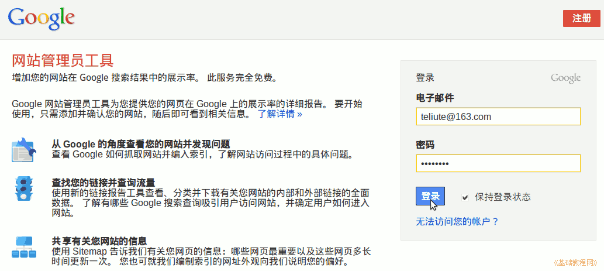
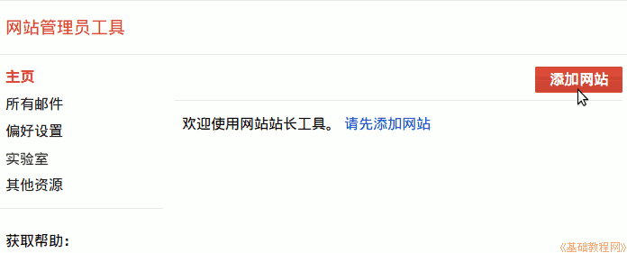
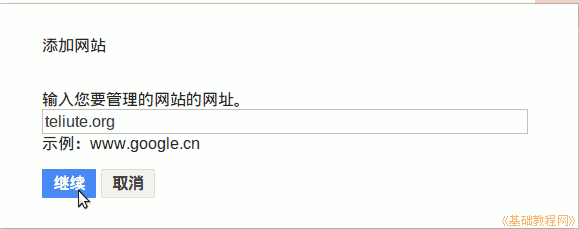
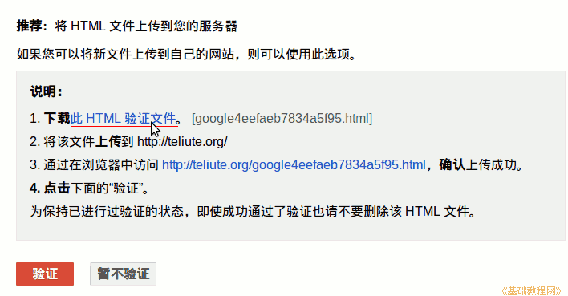
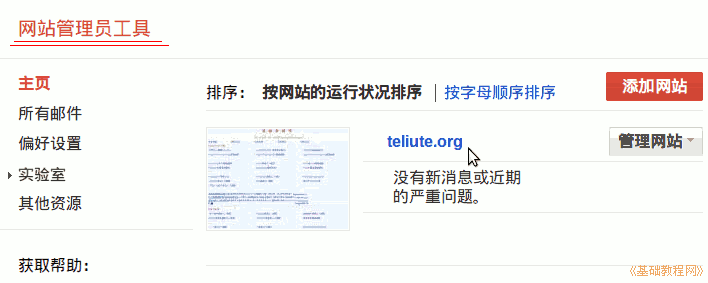

谷歌网站管理员工具使用指南
作者：TeliuTe 来源：基础教程网
一、登录和添加网站 返回目录 下一课使用谷歌网站管理员工具，可以很方便地查看网站展示情况，查找网站中存在的问题；
1、登录网站管理员工具
1）在浏览器中输入网址，进入账号登录页面，如果没有账号，点右上角注册一个：http://www.google.com/webmasters/tools/?hl=zh_CN；

2）登录成功后，首先提示“添加网站”，点击右上角添加按钮；

3）在出来的对话框中输入自己的网站域名，点“继续”；

4）接下来是下载验证文件，点击下载该文件，并上传到自己网站的根目录中，也可以选择其他“备用方法”；

5）确认上传成功后，点击下面的“验证”按钮进行验证，通过后点“继续”；
6）回到控制台，可以看到里面已经有了网站数据分析，点左上角的“网站管理员工具”可以看到验证网站的列表；

本节学习了登录谷歌网站管理员工具的基础知识，如果你成功地完成了练习，请继续学习下一课内容；
本教程由86团学校TeliuTe制作|著作权所有
基础教程网：http://teliute.org/
美丽的校园……
转载和引用本站内容，请保留作者和本站链接。